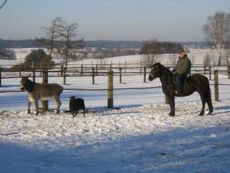
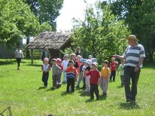
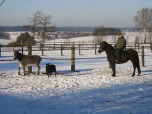
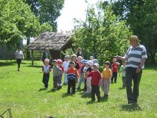

Offer
tel. +48(58) 681 22 02 lub +48 502 039 045
WE HAVE CONTACT WITH THE COMPANY ORGANIZING FLIGHTS WITH A GLIDER OVER KASHUBIA !!


 



WHERE YOU CAN SLEEP OR SPEND YOUR TIME ?
* A year-round house with full equipment;* Apartment with the kitchen and bathroom;
* You can sleep in your own tent or trailer;
* You can sleep in the barn with hay :).
VARIOUS ATTRACTIONS
* Horse riding, carriage rides,a ladder wagon, in winter KULIGI.
* Canoeing on Radunia.
* Lake 300m, Jar Raduni 1km.
* Fishing.
* Sauna, grill, fireplace, cottage with a fireplace.
* A mini open-air museum of agricultural tools.
* Children's playground, small ZOO.
RULES OF STAY
* Advance payment for the stay in the amount of 30%payable immediately after booking.
* The Hotel-day starts at 2 p.m.,
and ends at 12.00 the next day.
* The payment for the stay is charged in full
on arrival at the Farm.
* In case of earlier departure
we do not refund the unused payment for the stay.
ARRIVAL WITH A DOG
* to be agreed upon when booking.REGION'S TOURIST ATTRACTIONS
NEAR THE HOUSE :
* Kiełpino - historic church, Costerina retro train,
a tourist trail, near the Goths burial mounds
* Kartuzy - Kashubian Museum, monastery and collegiate church,
park, historic houses
* Łapalice - castle under construction
* Rutki - historic hydroelectric power plant and bridge
* Żukowo - remains of the Norbertine convent, a water mill
* Kościerzyna - locomotive museum, regional museum
* Będomin - Museum of the National Anthem
* Wdzydze Kiszewskie - open-air museum, Kashubian Ethnographic Park
* Chmielno - Museum of Kashubian Ceramics
* Wieżyca - the highest peak in Pomerania, an observation tower
* Ostrzyce - water equipment rental
* Szymbark - upside down house, the longest plank in the world
Other Attractions :
* Łeba - Słowiński National Park, moving dunes
* Bytów - Teutonic castle, museum
* Gniew - Teutonic castle, knights tournaments, feasts
* Malbork - the largest Teutonic castle, museum
* Trójmiasto - monuments of Gdańsk, the pier in Sopot,
Gdynia Oceanarium and other attractions
Price list:
* 1 day - 45 PLN / person* longer stay - PLN 40 / person per night
* child up to 10 years old - PLN 20 per day
HOW TO FIND US?
PROGRAM DOWNLOAD TOURS for preschoolers or children from the lower grades of primary school
OPINIONS AND GUEST BOOK